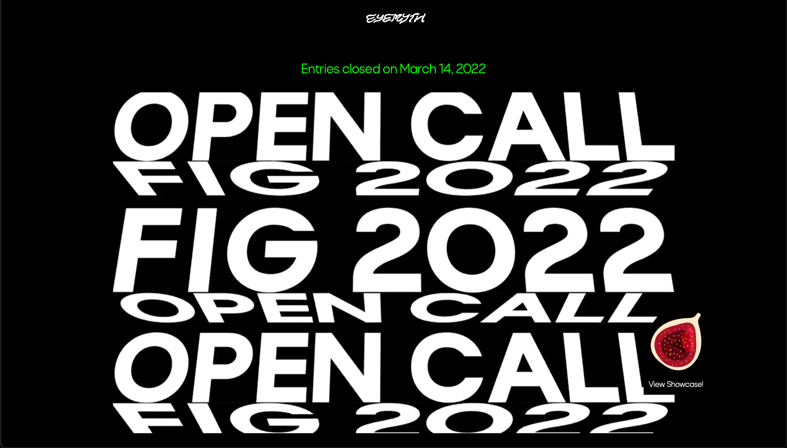
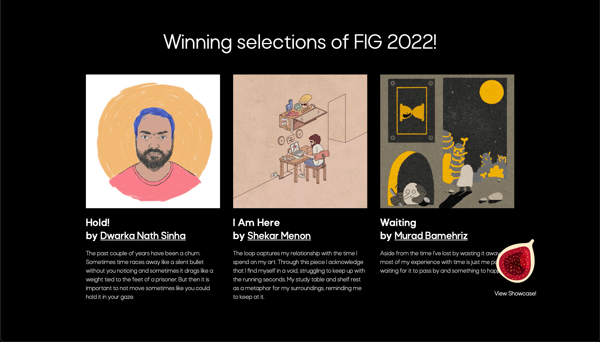
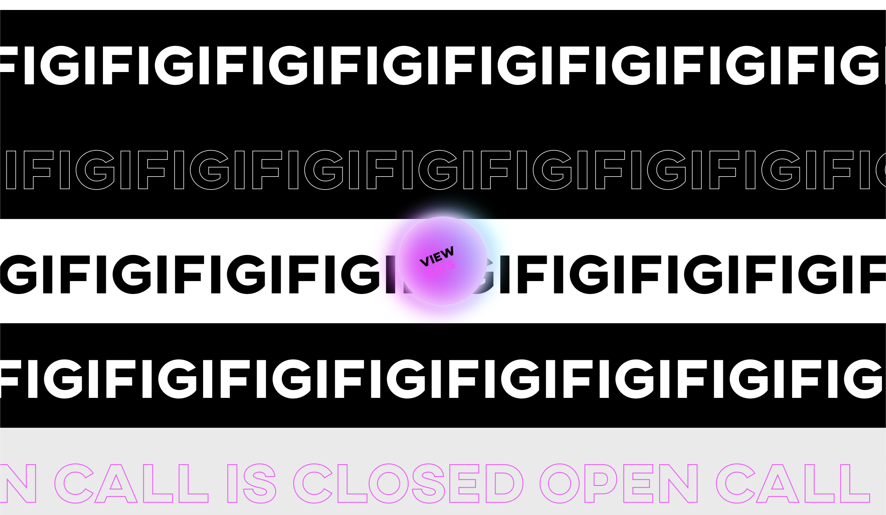

FIG, a GIF Festival
Overview
An online + offline exhibit celebrating the power of the GIF
Role
Co-creator and Developer
For
EyeMyth Media Arts Festival
FIG is an ONLINE + OFFLINE exhibit celebrating the power of the GIF. It is a small part of a larger study on the evolving internet expressions of our age – incubated at the EyeMyth Festival 2019.
Back for 2022, it's more feature packed than ever.

New year, new website
For this year, the theme is: Loss of Time
Time is a deeply personal experience and a highly unpredictable medium. As we strive to conquer time, there are moments when we find ourselves running behind it, and others when we are surprised at an unexpected route it has taken — stretching and compressing on its own whims and fancies. This year, FIG invites you to use the medium of a looping GIF to visualise your experiences with the cycle of losing time and regaining control.
FIG was launched in early March 2022 with an open call on the theme, with cash prizes for the top 3 submissions. Along with the new cash prizes, we also held a panel discussion with Meeta Malhotra and Steve Lawler to discuss the future of GIFs and the evolution of the short form storytelling medium.

Winners of FIG 2022!
A small selection from the submissions:
FIG will be back soon!
2019 Edition

The FIG website
As a part of the EyeMyth Media Arts Festival, FIG was a showcase of GIF's from artists around the world on the theme: The Loss of Creativity.

An open call for submissions was received with enthusiasm from the GIF community, with submissions on display on all digital screens at the Festival and online. The website, just like a GIF, loops infinitely!

The online gallery

A submission from Anisha Thampy
A small excerpt from a piece I wrote for the HardCopy.co:
"It is for this reason that a few of us within Quicksand, decided to create a space for Gif creators to showcase their work. The platform is called FIG, and was launched a few months ago. FIG’s mission is to celebrate the creation of Gifs by designers, illustrators, artists, writers and creators of all kinds. We opened up calls for submissions on the theme of ‘The Loss of Creativity’ and we received around forty amazing entries. This is just the beginning for the platform, and we hope to do a lot more for Gif creators. The team behind FIG are creators who love making Gifs using diverse digital and analogue techniques, and we wish to reach out to other creators who feel equally passionate about them.""